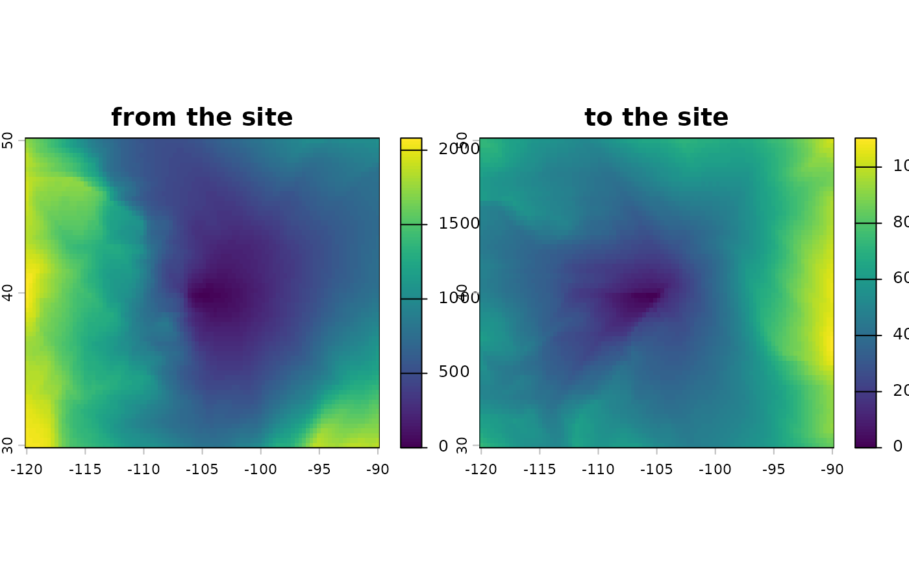

Least-cost travel time surface
least_cost.RdMap the least-cost wind travel time (or flow rate, its inverse) between one or more sites and every grid cell across the domain: downwind, from the sites to each cell, or upwind, from each cell to the sites. This function is a wrapper around accCost.
Arguments
- rose
A
wind_rose(), or awind_graphbuilt in advance whose direction matchesdirection; seepairwise_least_cost().- sites
A two-column matrix (or data frame) of point coordinates, or a
SpatVectorof points.- direction
Either
"downwind"(the default), for travel from the sites to each cell, or"upwind", for travel from each cell to the sites.- rate
Whether to return values as "rates" instead of the default "cost distances". Rates are the inverse of cost distances, representing flow rather than travel time.
- ...
Further arguments passed to
wind_graph(), such aswrap. Not allowed whenroseis already awind_graph.
Value
A single-layer SpatRaster. With rate = FALSE, the layer is named hours and gives
the travel time between each cell and the nearest site (in the given direction), in hours if
trans = 1 in wind_rose() and wind speeds are in m/s (otherwise in relative units). With
rate = TRUE, it is named rate and gives the inverse. Sites outside the grid are ignored,
with a warning.
Details
Paths are restricted to the eight neighbor directions, so cost distances are overestimated for routes between neighbor bearings; see pairwise_least_cost for magnitudes. Sites are snapped to the centers of their grid cells.
Examples
rose <- windscape_example("wind_rose")
site <- cbind(-105, 40)
from_site <- least_cost(rose, site)
to_site <- least_cost(rose, site, direction = "upwind")
terra::plot(c(from_site, to_site), main = c("from the site", "to the site"))
